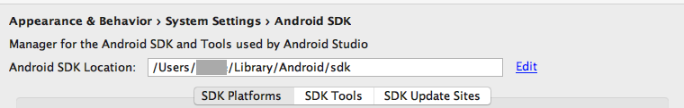

この実践的なコードラボはユニット 1: Android Developer Fundamentals (Version 2) コースの一部です。このコースでは、コードラボを順番に学習することで、このコースを最大限に活用することができます。
コースのコードラボの完全なリストについては、Codelabs for Android Developer Fundamentals (V2)を参照してください。
すべてのコンセプトチャプター、アプリ、スライドへのリンクを含むコースの詳細については、Android Developer Fundamentals (Version 2)を参照してください。
注：このコースでは、「codelab」と「実践」という用語を入れ替えて使用しています。
すでに知っておくべきこと
- Android Studioの基本的なワークフロー。
- Android StudioでEmpty Activityテンプレートを使ってアプリを作成する方法。
- Android Studioでのレイアウトエディタの使い方。
学ぶこと
- Androidの開発者情報やリソースを探す場所。
- アプリにランチャーアイコンを追加する方法。
- Androidアプリを開発しているときにヘルプを探す方法。
あなたがすること
- あらゆるレベルのAndroid開発者が利用できる多くのリソースの一部をご紹介します。
- アプリのランチャーアイコンを追加します。
このコードラボでは、以前のコードラボで作成したHelloToastアプリのランチャーアイコンを変更します。デフォルトのアイコンを、Android Studio内で利用可能な画像アセットに置き換えます。
Android Studioで作成した各アプリは、アプリを表すデフォルトのランチャーアイコンから始まります。ランチャー アイコンは、アプリ アイコンや製品アイコンと呼ばれることもあります。
Google Playでアプリを公開すると、アプリのランチャーアイコンは、Google Playストアのアプリのリストと検索結果に表示されます。
Androidを搭載したデバイスにアプリをインストールすると、アプリのランチャーアイコンがデバイスのホーム画面やその他の場所に表示されます。例えば、以下のスクリーンショットに示すように、ランチャーアイコンはデバイスの「アプリ検索」ウィンドウに表示されます。下に示すHelloToastアイコンは、Android Studioで作成するすべてのアプリプロジェクトで使用されるデフォルトのランチャーアイコンです。
ランチャーアイコンを変更するプロセスを経て、Android Studio のイメージアセット機能を紹介します。このタスクでは、Androidのドキュメント内のヘルプを見つける方法についても学びます。
1.1 Androidの公式ドキュメントを探る
最も便利なAndroidのドキュメントサイトをいくつか見てみて、何が利用できるのかを熟知しましょう。
developer.android.com にアクセスしてください。この公式のAndroid開発者向けドキュメントは、Googleによって最新の状態に保たれています。
developer.android.com/design/にアクセスしてください。このサイトでは、高品質なAndroidアプリの外観や機能をデザインするためのガイドラインを提供しています。
Material.ioというMaterial Designに関するサイトに行きましょう。Material Designは、Androidアプリに限らず、すべてのアプリがモバイルデバイス上でどのように見え、どのように機能するべきかを概説する概念的なデザイン哲学です。マテリアルデザインについて詳しく知りたい方は、リンク先をご覧ください。たとえば、色の使用について学ぶには、「デザイン」タブをクリックし、「色」を選択します。
developer.android.com/docs/にアクセスして、API情報、リファレンスドキュメント、チュートリアル、ツールガイド、コードサンプルを見つけます。
developer.android.com/distribute/ にアクセスして、Google Play でアプリを公開するための情報を確認します。Google Play は、Android SDK で開発されたアプリのための Google のデジタル配信システムです。Google Play コンソールを使用して、ユーザーベースを増やし、収入を得ることができます。
1.2 ランチャーアイコンにイメージアセットを追加する
このステップでは、HelloToastアプリのランチャーアイコンにクリップアート画像を追加します。
レイアウトエディタを使用して前回のコードラボで作成したHelloToastアプリプロジェクトを開くか、新しいアプリプロジェクトを作成します。
プロジェクト > Androidペインで、resフォルダを右クリック（またはControlキーを押しながらクリック）します。新規作成] > [イメージアセット]を選択します。イメージアセットの設定ダイアログが表示されます。

Icon Type] フィールドで、まだ選択されていない場合は、[Launcher Icons (Adaptive & Legacy)] を選択します。
前景レイヤー］タブをクリックします。アセットタイプ」では、「クリップアート」を選択します。
下のスクリーンショット。
上のスクリーンショットで2のように表示されているクリップアートフィールドのロボットアイコンをクリックします。アイコンの選択ダイアログが表示され、マテリアルデザインアイコンセットが表示されます。
アイコンの選択ダイアログをブラウズするか、名前でアイコンを検索します。良いムードを暗示するムードアイコンなどのアイコンを選択します。OKをクリックします。

画像アセットの設定] ダイアログで [背景レイヤー] タブをクリックします。アセットの種類では、[色] を選択します。カラーチップをクリックし、アイコンの背景レイヤーとして使用する色を選択します。
レガシー タブをクリックし、デフォルト設定を確認します。レガシー、ラウンド、Google Play ストア アイコンを生成することを確認します。次へ]をクリックします。
AVDエミュレータまたはAndroid搭載デバイスでアプリを実行します。
Android Studioは、異なる画面密度用のmipmapディレクトリにランチャーイメージを自動的に追加します。これで、アプリは新しいアイコンを起動アイコンとして使用するようになりました。
ヒント：効果的なランチャーアイコンのデザインについては、「マテリアルデザイン製品アイコン」ガイドを参照してください。
Android Studioには、一般的で推奨されるアプリやアクティビティのデザイン用のテンプレートが用意されています。組み込みのテンプレートを使用することで、時間を節約し、デザインのベストプラクティスに従うことができます。
各テンプレートには、スケルトン アクティビティとユーザー インターフェイスが組み込まれています。Empty Activity（空のアクティビティ）テンプレートはすでに使用しています。基本アクティビティテンプレートには、より多くの機能があり、Android搭載デバイスのアプリバーに表示されるオプションメニューなどの推奨アプリ機能が組み込まれています。
2.1 基本アクティビティのアーキテクチャを探る
Basic Activity テンプレートは、Android Studio が提供する汎用性の高いテンプレートで、アプリ開発のスタートアップに役立ちます。
Android Studio で、Basic Activity テンプレートを使用するプロジェクトを作成します。言語として Java を選択します。
アプリをビルドして実行します。
下の図と表で、ラベルの付いたパーツを識別します。デバイスまたはエミュレータの画面で、同等のものを探します。表に記載されている対応するJavaコードとXMLファイルを確認します。
Java ソース コードと XML ファイルに精通していると、このテンプレートを自分のニーズに合わせて拡張したり、カスタマイズしたりするのに役立ちます。
基本アクティビティテンプレートのアーキテクチャ

#
UIの説明
コードリファレンス
1
Androidシステムが提供し、制御するステータスバー。
テンプレートコードでは見えませんが、アクティビティからステータスバーにアクセスすることができます。例えば、MainActivity.javaにコードを追加して、必要に応じてステータスバーを非表示にすることができます。
2
アプリバーは、アクションバーとも呼ばれ、ビジュアル構造、標準化されたビジュアル要素、およびナビゲーションを提供します。
activity_main.xmlでは、AppBarLayout要素の中にあるToolbarinsideを探します。下位互換性のために、テンプレート内のAppBarLayoutには、アクション・バーと同じ機能を持つツールバーが埋め込まれています。アプリ・バーのチュートリアルについては、アプリ・バーの追加を参照してください。
3
アプリ名は最初はパッケージ名から派生していますが、好きなように変更することができます。
AndroidManifest.xmlで、android:label="@string/app_name "を探してください。strings.xmlでapp_nameの文字列を指定します。
4
オプションメニューのオーバーフローボタンは、アクティビティのメニュー項目を保持します。オーバーフロー ボタンは、アプリの検索や設定などのグローバル メニュー オプションも保持します。アプリのメニュー項目は、このメニューに入ります。
MainActivity.java では、onOptionsItemSelected() メソッドは、ユーザーがメニュー項目を選択したときに何が起こるかを実装しています。オプション メニュー項目を表示するには、res/menu/menu_main.xml ファイルを開きます。このテンプレートでは、Settings メニュー項目のみが指定されています。
5
CoordinatorLayout ViewGroupは、UI要素が相互作用するメカニズムを提供するレイアウトです。アプリの UI は content_main.xml ファイルの中にあり、この ViewGroup に含まれています。
activity_main.xmlで、include layout命令を探してください。このレイアウトではビューは指定されていません。代わりに、レイアウトにはcontent_mainレイアウトが含まれており、ここではアプリのビューが指定されています。システム ビューは、アプリに固有のビューとは別に保持されます。
6
このテンプレートでは、TextViewを使用して「Hello World」を表示します。このTextViewをアプリのUI要素に置き換えます。
Hello World」テキストビューはcontent_main.xmlファイルにあります。アプリのすべてのUI要素は、このファイルで定義する必要があります。
7
フローティングアクションボタン（FAB
activity_main.xmlで、FloatingActionButton要素を探します。FABは、クリップアートアイコンを使用したUI要素として定義されています。MainActivity.javaには、FABのためのonClick()リスナーを設定するonCreate()のスタブが含まれています。
2.2 テンプレートが生成するアプリをカスタマイズする
基本アクティビティテンプレートで生成されたアプリの外観を変更します。例えば、アプリバーの色をステータスバーに合わせて変更することができます(一部のデバイスでは、ステータスバーはアプリバーが使用しているのと同じ原色の濃い色合いになっています)。また、フローティングアクションボタン（FAB）を使用しない場合は削除することもできます。
アプリバーが表示するアプリの名前を変更します。これを行うには、string.xmlファイル内のapp_name文字列リソースを以下のように変更します。
activity_main.xml内のアプリバー（ツールバー）の色を変更するには、android:background属性を"?attr/colorPrimaryDark "に変更します。この値は、アプリバーの色をステータスバーと一致する暗い原色に設定します。
FAB を削除するには、まず、ボタンの onClick() リスナーを設定する onCreate() のスタブ コードを削除します。MainActivity.java を開き、次のコードのブロックを削除します。
レイアウトからFABを削除するには、activity_main.xmlから次のXMLコードのブロックを削除します。
アプリを実行します。FABが表示されなくなり、名前が変更され、アプリバーの背景色が濃くなり、ステータスバーの色と一致するようになりました。

ヒント。リソースにアクセスするためのXML構文の詳細については、「アプリのリソースにアクセスする」を参照してください。
2.3 テンプレートを使ってアクティビティを追加する方法を探る
これまでのこのコースのコードラボでは、新しいプロジェクトを開始する際に Empty Activity と Basic Activity のテンプレートを使用してきました。(Activityクラスについては別のレッスンで学びます。) また、プロジェクトが作成された後にアクティビティを作成する際にも、アクティビティテンプレートを使用することができます。
アプリ プロジェクトを作成するか、既存のプロジェクトを選択します。
プロジェクト > Android ペインで、java フォルダを右クリックします。
新規作成 > アクティビティ > ギャラリーを選択します。
アクティビティ テンプレートの 1 つを選択して、アプリにアクティビティを追加します。たとえば、ナビゲーション ドローワー アクティビティを選択して、ナビゲーション ドローワーを持つアクティビティを追加します。
レイアウト エディタでアクティビティを表示するには、アクティビティのレイアウト ファイル（例： activity_main2.xml）をダブルクリックします。デザイン] タブと [テキスト] タブを使用して、アクティビティのレイアウト プレビューとレイアウト コードを切り替えます。
GitHub の Google Samples リポジトリには、Android のコードサンプルが用意されています。
3.1 Android コードサンプル
Android Studio内から直接コードサンプルを探索することができます。
Android Studio で、[ファイル] > [新規作成] > [サンプルのインポート] を選択します。
サンプルをブラウズします。
サンプルを選択し、[次へ] をクリックします。
デフォルト値を受け入れて、[Finish（完了）] をクリックします。
注: ここに記載されているサンプルは、さらなる開発のための出発点として意図されています。あなた自身のアイデアをデザインして、それらに組み込んでいくことをお勧めします。
3.2 SDKマネージャを使用してオフラインドキュメントをインストールする
Android Studio をインストールすると、Android SDK (Software Development Kit) の要点もインストールされます。ただし、追加のライブラリやドキュメントも用意されており、SDKマネージャーを使用してインストールすることができます。
ツール] > [Android] > [SDK マネージャ] を選択します。
左側の列で、Android SDKをクリックします。
画面上部にある Android SDK Location のパスを選択してコピーします。

SDK Platformsタブをクリックします。ここからAndroidの追加バージョンをインストールすることができます。
SDK Update Sites タブをクリックします。Android Studio は、リストされたサイトと選択されたサイトを定期的にチェックして更新を行います。
SDK Tools タブをクリックします。デフォルトではインストールされていないSDKツールの追加インストールや、Android開発者向けドキュメントのオフライン版をインストールすることができます。
まだインストールされていない場合は、「Android SDK用ドキュメント」のチェックボックスを選択し、[適用]をクリックします。
インストールが完了したら、「完了」をクリックします。
上記でコピーしたsdkディレクトリに移動し、docsディレクトリを開きます。
index.htmlを見つけて開きます。
Android DeveloperのYouTubeチャンネルでは、チュートリアルやヒントを紹介しています。
Android チームは Android 公式ブログでニュースやヒントを投稿しています。
Stack Overflow は、プログラマー同士が助け合うコミュニティです。問題に遭遇した場合、誰かがすでに答えを投稿している可能性が高いです。例えば、"How do I set up and use ADB over WiFi? "や "What are the most common memory leaks in Android development? "などの質問を投稿してみてください。
そして最後になりますが、Google検索に質問を入力すると、Google検索エンジンはこれらすべてのリソースから関連する結果を収集してくれます。例えば、"インドで最も人気のあるAndroid OSのバージョンは？"
4.1 Stack Overflowでタグを使って検索する
Stack Overflowの検索ボックスに[android]と入力してください。タグが付けられている投稿を検索したい場合は、[]カッコの中にAndroidに関するタグが付けられていることを示しています。
タグと検索語を組み合わせて、より具体的に検索することができます。以下の検索を試してみてください。
アンドロイド]と[レイアウト
アンドロイド] "ハローワールド"
Stack Overflow での検索方法の詳細については、Stack Overflow ヘルプセンターを参照してください。
公式Android開発者ドキュメント：developer.android.com
マテリアルデザインとは、モバイルデバイス上でアプリがどのように見え、どのように動作するかを概説する概念的なデザイン哲学です。
Google Playストアは、Android SDKで開発されたアプリのためのGoogleのデジタル配信システムです。
Android Studioには、一般的で推奨されるアプリやアクティビティのデザイン用のテンプレートが用意されています。これらのテンプレートは、一般的なユースケースのための作業コードを提供しています。
プロジェクトを作成する際に、最初のアクティビティのテンプレートを選択することができます。
アプリをさらに開発している間に、アクティビティやその他のアプリコンポーネントは、組み込みのテンプレートから作成することができます。
Android Studio には多くのコードサンプルが含まれているので、研究したり、コピーしたり、プロジェクトに組み込むことができます。
関連する概念のドキュメントは1.4にあります。学習に役立つリソースにあります。
Android Studio ドキュメント:
Android developer ドキュメント:
- Android developer site
- Google Developers Training
- Layouts
- App resources overview
- Layouts
- Menus
TextView- String resources
- App Manifest
Code サンプル:
ビデオ:
他:
このセクションでは、インストラクターが主導するコースの一部として、このコードラボを通して作業する学生のための可能な宿題をリストアップします。以下のことを行うのはインストラクター次第です。
必要に応じて宿題を割り当てる。
宿題の提出方法を学生に伝える。
宿題の割り当てを評価します。
インストラクターは、これらの提案を少しでも多くのように使用することができますし、彼らが適切であると感じる他の宿題を割り当てるために自由に感じる必要があります。
あなた自身でこのコードラボを介して作業している場合は、あなたの知識をテストするためにこれらの宿題の割り当てを使用して自由に感じています。
サンプルアプリをロードしてリソースを探索する
Android Studioにサンプルアプリの1つをロードします。
アプリ内のJavaアクティビティファイルの1つを開きます。見慣れないクラス、タイプ、またはプロシージャを探し、Android Developer ドキュメントで調べます。
Stack Overflow にアクセスして、同じトピックに関する質問を検索します。
ランチャーのアイコンを変更します。Android Studio の画像アセットセクションにあるアイコンを使用します。
以下の質問に答えてください。
質問1
Android Studio プロジェクト内で、サンプル・アプリのリストを開くには、どのメニュー・コマンドを使用できますか？1つ選んでください。
ファイル > 開く
ファイル > 新規作成 > サンプルのインポート
ファイル > 新規作成 > モジュールのインポート
ファイル > 新規作成 > プロジェクトのインポート
質問2
基本アクティビティのテンプレートがUIの一部として提供しているボタンはどれですか？2つ選んでください。
ナビゲーションボタン
オプションメニューのオーバーフローボタン
フローティングアクションボタン
テキスト "Button "を持つButtonクラスのボタン
質問3
Android開発者向けの公式ドキュメントのソースはどれですか？1つ選んでください。
stackoverflow.com
officialandroid.blogspot.com
開発者.android.com
github.com
アプリを提出して採点を受ける
学年別ガイダンス
その結果、Android端末の検索アプリ画面に新しいランチャーアイコンが表示され、新しいアプリ、つまりHello Toastのバージョンが追加されました。
Android Developer Fundamentals (V2)コースの次の実践的なコードラボを探すには、Codelabs for Android Developer Fundamentals (V2)を参照してください。
概念章、アプリ、スライドへのリンクを含むコースの概要については、Android Developer Fundamentals (Version 2)を参照してください。